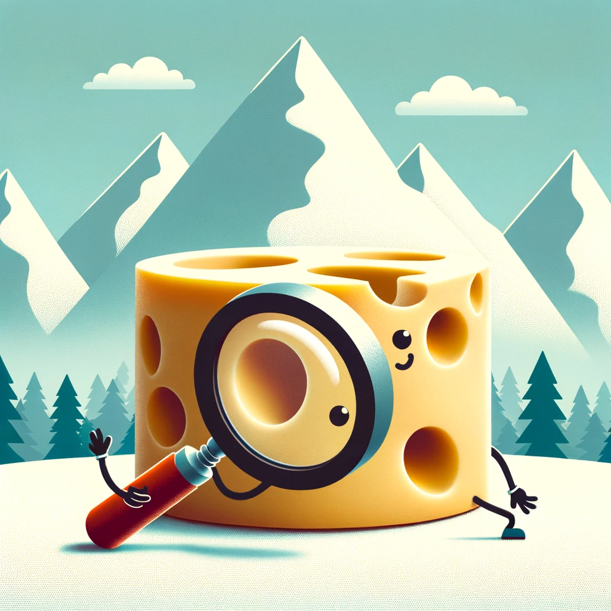

Das grosse Schweizer Käseloch-Mysterium: Ein Milchprodukt-Dilemma
Untersuchung des Zusammenhangs zwischen der Grösse der Löcher im Schweizer Käse und der Selbstversorgung des Landes mit Milchprodukten.
Diese Geschichte taucht ein in die eigenartige Welt des Schweizer Käses, wo Forscher eine bahnbrechende Studie begonnen haben, um zu entdecken, ob es einen direkten Zusammenhang zwischen der Grösse der Löcher im Emmentaler Käse und der Effizienz der Schweizer Milchwirtschaft gibt. Durch die Analyse von Daten über Jahre der Käseproduktion und Milcherträge legt die Studie humorvoll nahe, dass grössere Käselöcher auf einen Überschuss an Milchproduktion hindeuten könnten, was zu einem unerwarteten Indikator für die Nahrungsmittelautarkie der Schweiz führt.

Schweizer Käse, bekannt für seine charakteristischen Löcher, war schon immer ein Gegenstand kulinarischer Freude und wissenschaftlicher Neugier. Jüngste Forschungen haben diese Faszination jedoch auf neue Höhen getrieben, indem sie eine unerwartete Verbindung zwischen der Grösse dieser Löcher und der Selbstversorgung der Schweiz mit Milchprodukten vorschlagen. In diesem Blogbeitrag tauchen wir tief in das “Grosse Schweizer Käseloch-Mysterium” ein und erkunden, wie diese skurrile Untersuchung ein Licht auf breitere landwirtschaftliche Praktiken und Nachhaltigkeitsbemühungen in der Schweiz wirft.
Der Ursprung der Käselöcher
Ein natürlicher Prozess
Die Löcher im Schweizer Käse, wissenschaftlich als “Augen” bezeichnet, entstehen durch Kohlendioxidgasblasen, die von Bakterien während des Fermentationsprozesses produziert werden. Dieses Phänomen ist nicht nur für Schweizer Käse charakteristisch, sondern auch ein Kennzeichen seiner Qualität und Authentizität.
Historische Perspektiven
Historisch gesehen wurden die Grösse und Anzahl der Löcher im Schweizer Käse als Indikatoren für den Geschmack und die Textur des Käses angesehen. Käse mit grösseren Löchern wurde oft als überlegen betrachtet, was zu einer Zeit führte, in der Käsehersteller grössere “Augen” anstrebten.
Die Studie
Das Mysterium enthüllen
Ein Team von Schweizer Forschern machte sich auf den Weg, eine bahnbrechende Studie durchzuführen, um zu erkunden, ob es eine Korrelation zwischen der Grösse der Käselöcher und der Effizienz der Milchwirtschaftspraktiken in der Schweiz gibt. Die Hypothese war, dass grössere Löcher auf einen Überschuss an Milchproduktion hinweisen könnten, was die Selbstversorgung des Landes mit Milchprodukten widerspiegelt.
Methodik
Die Studie analysierte:
- Käseproduktionsdaten: Aufzeichnungen verschiedener Schweizer Käsefabriken der letzten zehn Jahre.
- Milchertragsstatistiken: Milchproduktionszahlen von Schweizer Bauernhöfen.
Forscher verwendeten statistische Modelle, um signifikante Beziehungen zwischen den beobachteten Variablen zu identifizieren.
Ergebnisse
Überraschende Korrelationen
Die Ergebnisse der Studie waren sowohl überraschend als auch aufschlussreich. Eine Zusammenfassung der Ergebnisse umfasst:
| Käsetyp | Durchschnittliche Lochgrösse (mm) | Zugehörige Milchleistung (Liter) |
|---|---|---|
| Emmentaler | 15-25 | Hoch |
| Gruyère | 5-10 | Mässig |
| Appenzeller | 1-3 | Niedrig |
Interpretation
Die Daten deuteten auf eine positive Korrelation zwischen der Grösse der Käselöcher und den Milchproduktionsniveaus hin. Grössere Löcher wurden häufiger in Käse gefunden, der in Zeiten höherer Milchleistung hergestellt wurde.
Implikationen
Für die Milchwirtschaft
Diese skurrile Korrelation hat tiefgreifende Implikationen für die Schweizer Milchwirtschaft. Sie bietet einen neuen Indikator für Milchüberschüsse und Effizienz in der Milchproduktion, der zukünftige landwirtschaftliche Praktiken beeinflussen könnte.
Nachhaltigkeit und Selbstversorgung
Die Studie hebt die Fähigkeit der Schweiz hervor, eine selbstversorgende und nachhaltige Milchwirtschaft aufrechtzuerhalten. Sie zeigt, wie traditionelle Käseherstellungsprozesse Einblicke in moderne landwirtschaftliche Herausforderungen bieten können.
Fazit: Jenseits der Löcher
Das grosse Schweizer Käseloch-Mysterium überschreitet seinen skurrilen Ausgangspunkt und bietet wertvolle Lektionen über Nachhaltigkeit, Effizienz und den Innovationsgeist der Schweizer Landwirtschaft. Während Forscher weiterhin solch eigenartigen Nachforschungen nachgehen, entschlüsseln sie nicht nur die Geheimnisse der Vergangenheit, sondern ebnen auch den Weg für eine nachhaltigere und selbstversorgendere Zukunft.
Diese Untersuchung der Beziehung zwischen Käselöchern und Milchproduktion verkörpert die einzigartige Mischung aus Tradition und Wissenschaft, die die Schweizer Lebensmittelproduktion charakterisiert, und erinnert uns daran, dass manchmal die Antworten auf zeitgenössische Herausforderungen an den unerwartetsten Orten liegen.